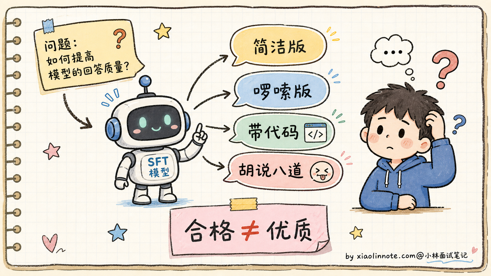
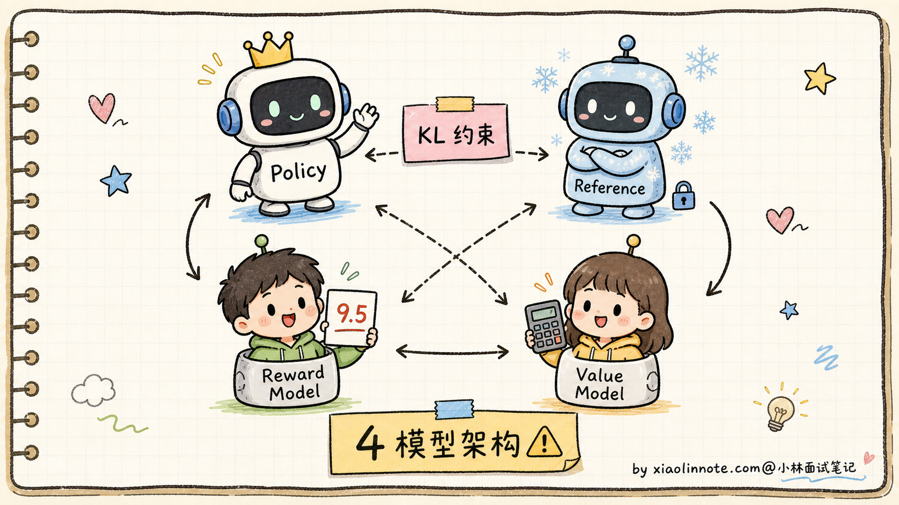
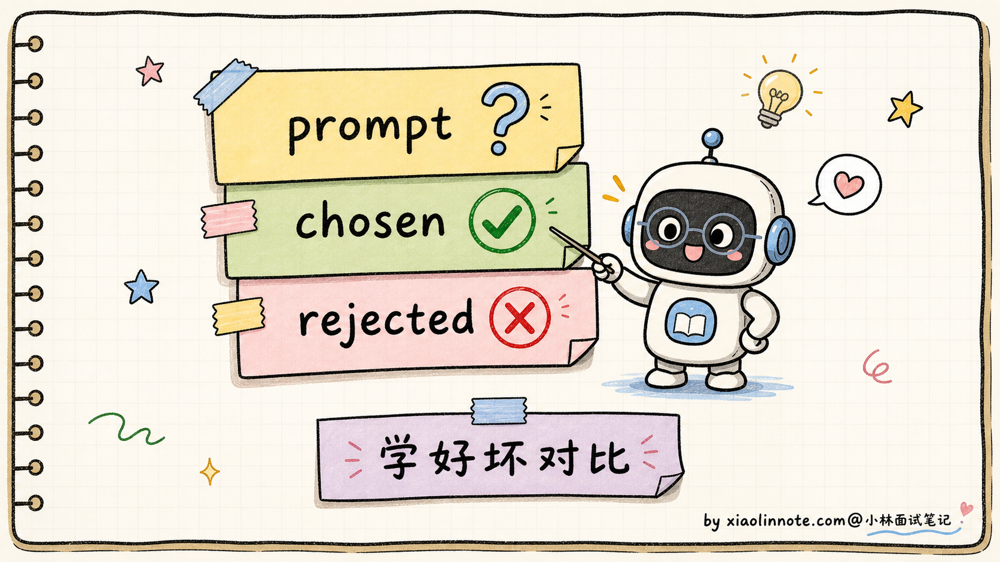
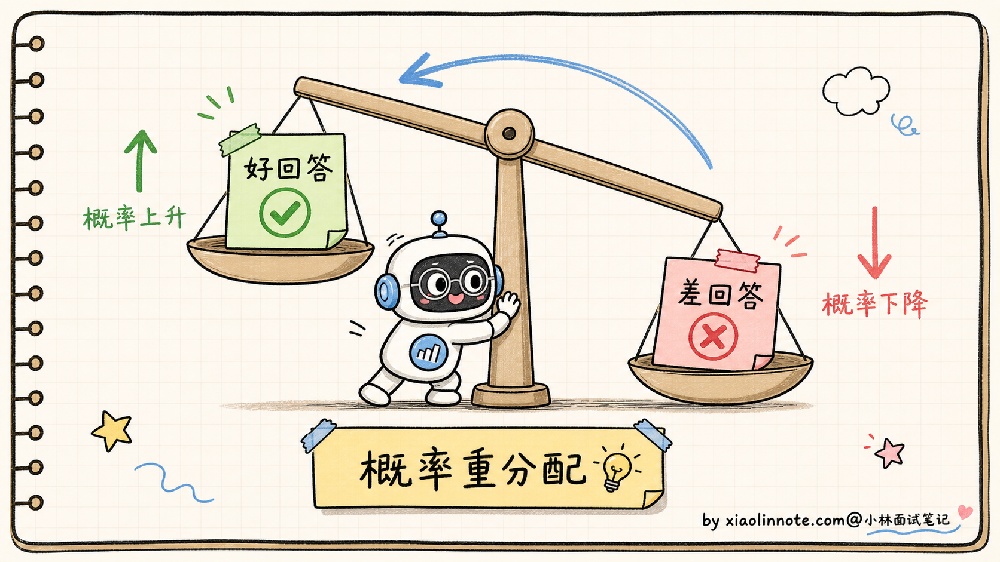
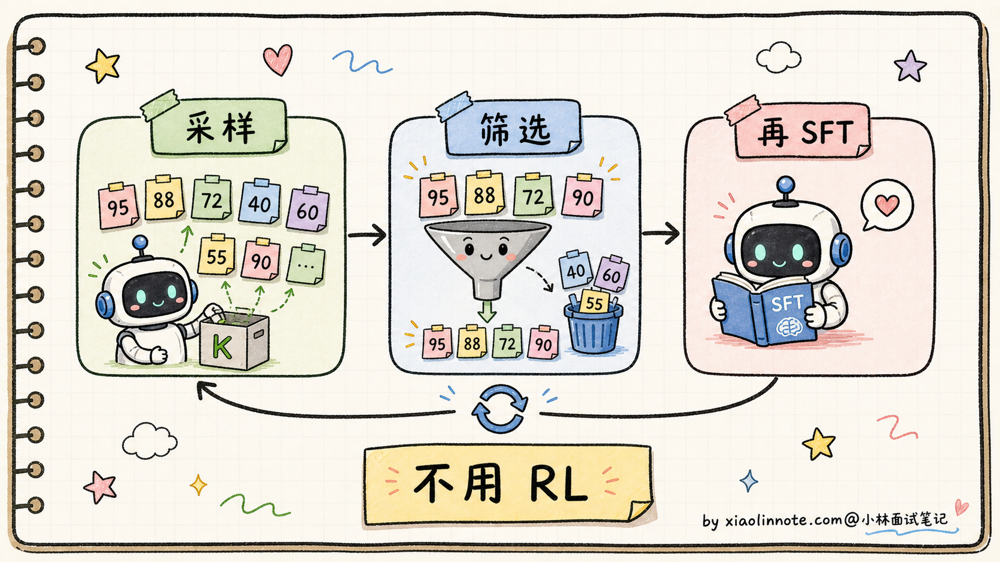
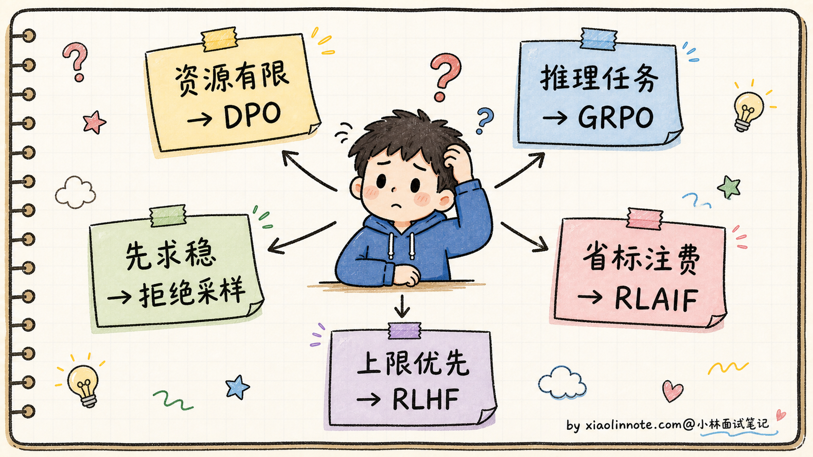
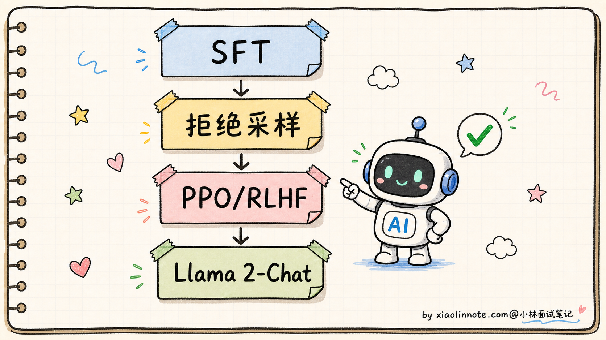
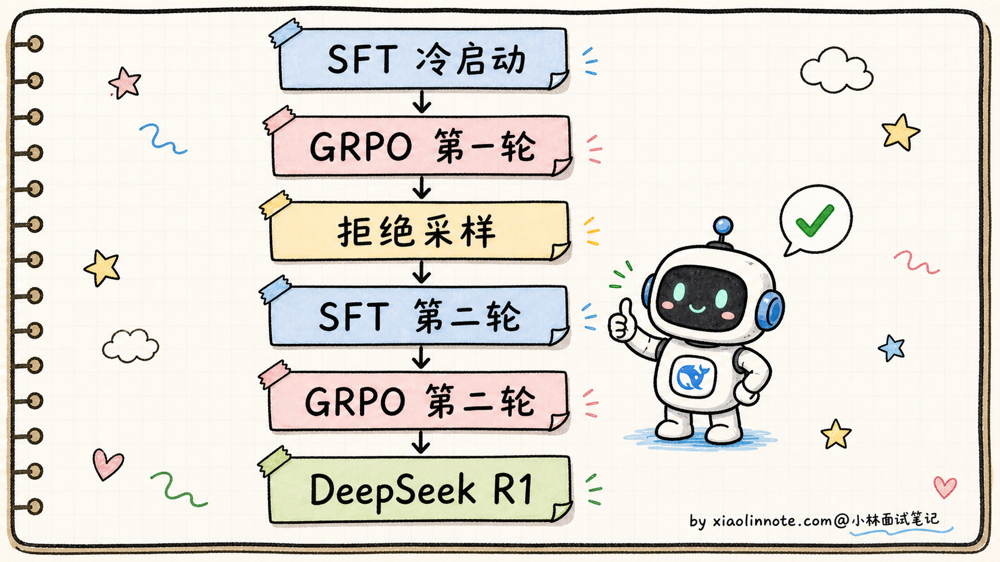

本篇目录
10. SFT 之后还有哪些 Post-Training？RLHF、DPO、GRPO、拒绝采样什么关系？
👔面试官：来讲讲 SFT 之后还有哪些 Post-Training 方法？RLHF、DPO、GRPO、拒绝采样这几个什么关系？
🙋♂️我：SFT 之后就是 RLHF 嘛，先训个奖励模型再用 PPO 强化学习，让模型按人类偏好生成回答。
👔面试官：你只说了 RLHF，那 DPO 你跳过去了？DPO 和 RLHF 是替代关系还是补充关系？再说，「奖励模型」是怎么训的？「PPO 强化学习」具体在调什么？为什么需要「参考模型」？
🙋♂️我：哦哦，DPO 是 RLHF 的简化版，绕过奖励模型，直接拿好坏回答对学。
👔面试官：好，那 GRPO 又是什么？为什么 DeepSeek R1 出了之后整个圈子都在讨论 GRPO？它和 PPO、DPO 是什么关系？还有「拒绝采样」是怎么回事？「RLAIF」呢？这一堆方法你能画一张家族图谱吗？
🙋♂️我：呃……GRPO 我有点模糊，是不是 PPO 的另一种形式？
👔面试官：你这是在猜词。GRPO 是 DeepSeek 在 2024 年提出的，相比 PPO 砍掉了 Value Model。「相比 PPO 砍掉 Value Model」具体是怎么砍的？省掉它之后用什么估计优势函数？这些不搞清楚，面试官一追问就露馅。回去补一下。
被这几个问题点完，Post-Training 这道题才显出深度，它不是「RLHF 一招走天下」，是 SFT 之后分叉出来的一整个家族：DPO、GRPO、RLAIF、拒绝采样各有各的位置。特别是 GRPO 这两年的爆火，不知道这段历史会显得跟不上节奏。
💡 简要回答
我理解 Post-Training 是个上位概念，指的是 SFT 之后所有继续提升模型质量的训练阶段。它不是一个单一方法，而是一族方法的总称。
SFT 让模型学会「按指令格式回答」，但 SFT 后的模型还有两个问题没解决。第一，回答可能有害、不符合人类价值观；第二，同一个问题的多种合格回答里，模型不知道哪个更受人类欢迎。这就是 Post-Training 要补的课。
主流的 Post-Training 方法有五大类。
RLHF（Reinforcement Learning from Human Feedback） 是最经典的方案。流程是先用人类对回答的排名训练一个奖励模型，再用 PPO 算法让大模型生成的回答尽量得高分。同时维护一个参考模型用 KL 散度约束，防止主模型「钻空子」。优点是效果上限高，缺点是流程复杂、要同时维护 4 个模型、训练不稳定。
DPO（Direct Preference Optimization） 是 RLHF 的简化版。核心洞见是 RLHF 的优化目标可以推导成一个等价的监督学习损失，绕过显式奖励模型，直接拿（提示，好回答，差回答）三元组训练。优点是只需 2 个模型、训练稳定、实现简单。缺点是效果上限依赖偏好数据质量，探索能力不如精心调过的 RL。很多开源 Instruct 模型会用 DPO 或 DPO 的变体做偏好对齐，但不能把 Llama 2-Chat 也说成 DPO 路线，它公开论文里的关键对齐方法是拒绝采样和 PPO/RLHF。
GRPO（Group Relative Policy Optimization） 是 DeepSeek 在 2024 年提出的 PPO 改进版。核心思路是砍掉 PPO 的 Value Model，改用「同一问题采样 G 个回答、用组内相对排名作为基线」估计优势函数。这样省掉 Value Model 的训练成本，显存减半。DeepSeek R1、DeepSeek-Math、Qwen 系列推理模型都用 GRPO，是 2026 年最热的对齐方案。
拒绝采样（Rejection Sampling Fine-tuning） 是个简单粗暴的方法。让模型对每个 Prompt 生成多个回答，用奖励模型筛出高分的，然后再做一轮 SFT。流程上没有 RL，就是「生成 -> 筛选 -> 再 SFT」循环。Llama 2 的对齐流程里就用了这个。
RLAIF（Reinforcement Learning from AI Feedback） 是用强 AI 模型代替人类标注偏好。Anthropic 的 Constitutional AI、Google 的相关工作里都有 RLAIF 的影子。优点是可以批量生成偏好数据、标注成本低，缺点是依赖一个更强的「教师 AI」。
最关键的认知是这五类方法不是互相替代，真实的对齐流程通常是组合使用的。比如 Llama 2-Chat 公开流程里用了 SFT、拒绝采样和 PPO/RLHF；DeepSeek R1 用了「SFT 冷启动 + GRPO 多轮迭代 + 拒绝采样筛数据」这一类组合路线。
📝 详细解析
Post-Training 是什么概念？为什么 SFT 之后还需要它
要理解 Post-Training 这一族方法，得先回答一个问题：SFT 之后，模型还差什么？
SFT（Supervised Fine-Tuning，监督微调）的目标是让模型从「文本续写机器」变成「按指令回答的对话机器」。训练数据是（指令，期望回答）对，模型学会的是「碰到指令格式就给出格式化的回答」。
问题是，SFT 学到的只是「合格」，不是「优质」。同一个问题，可以有很多种「合格」的回答：有的简洁、有的啰嗦；有的带代码、有的纯文字；有的承认「我不确定」、有的硬装专业胡说八道。SFT 数据里可能各种风格都有，模型学完之后会随机挑一种风格输出，但用户对质量是有偏好的。

更严重的问题是安全对齐。SFT 训练数据里可能没覆盖「用户问怎么造毒」「用户问怎么诈骗」这种场景，SFT 模型遇到这些问题可能就一本正经地回答了。Post-Training 的任务之一就是教会模型「什么不能说」「不知道就说不知道」。
Post-Training 这个词本身是个上位概念，覆盖了 SFT 之后所有继续训练的方法。下面五大类是工业界最主流的方案，每一类的设计哲学都不一样。
RLHF：经典方案，4 模型架构
RLHF（Reinforcement Learning from Human Feedback，基于人类反馈的强化学习）是 OpenAI 在 InstructGPT 中开创的方案，也是 ChatGPT 早期版本的核心训练方法。
整个流程分三步：
第一步：收集偏好数据。人类标注员对同一个 Prompt 的多个回答做排序，比如「回答 A 比回答 B 好，B 比 C 好」。这种排序数据比绝对评分更稳定，因为人类比较两个回答的相对好坏比给绝对分数容易。
第二步：训练奖励模型（Reward Model）。用偏好数据训一个独立的小模型，输入是（Prompt + 回答），输出是一个分数。训练目标是让「人类觉得好的回答」分数高、「差回答」分数低。这个奖励模型代替了人类，可以批量给后续生成的回答自动打分。
第三步：用 PPO 算法优化主模型。让主模型生成回答 -> 用奖励模型打分 -> PPO 调整主模型参数往高分方向走。同时维护一个「参考模型」（SFT 模型的冻结副本），用 KL 散度约束主模型不要离参考模型太远，防止「奖励 hacking」（模型学会欺骗奖励模型而不是真的变好）。

RLHF 的优点和缺点都很突出：
- 优点：效果上限高，因为 RL 可以探索出 SFT 数据里没有的好回答方式
- 缺点：4 个模型同时训练，显存占用是 SFT 的好几倍；PPO 算法本身不稳定、超参敏感；reward hacking 风险一直存在
OpenAI 早期的 ChatGPT 强大效果就来自精心调优的 RLHF，但工业界能驾驭 RLHF 的团队凤毛麟角，所以后来出现了一系列简化方案。
DPO：绕过奖励模型的等价转换
DPO（Direct Preference Optimization，直接偏好优化）是 2023 年斯坦福提出的方案，核心是一个数学上的等价转换。
研究者们发现：RLHF 的优化目标，可以通过推导改写成一个纯监督学习的目标函数，不需要显式训练奖励模型。直觉上，「奖励模型」的功能可以被「主模型相对于参考模型的概率比值」完全替代。
数据格式简单到不能再简单：
# DPO 训练数据：每条是一个三元组
{
"prompt": "如何学好 Python？",
"chosen": "建议先从官方文档入手，配合做小项目实践……", # 人类更偏好的回答
"rejected": "Python 很简单，随便找个教程看看就行了……" # 人类不太喜欢的回答
}
DPO 的损失函数直觉上做的事情是：
# DPO 损失（简化直觉版，不是完整公式）
loss = -log(sigma(
beta * (
log(policy(chosen) / ref(chosen)) # 主模型 vs 参考模型在「好回答」上的概率比
- log(policy(rejected) / ref(rejected)) # 主模型 vs 参考模型在「差回答」上的概率比
)
))
# 目标：让 chosen 的比值 > rejected 的比值
# 即：训练后的主模型对「好回答」概率提升，对「差回答」概率降低
DPO 的优势：
- 只需 2 个模型：policy + reference，显存占用是 RLHF 的一半
- 训练稳定：变成监督学习问题，没有 RL 的不稳定性
- 实现简单：用现成的深度学习框架就能写
代价：
- 效果上限略低于精心调过的 PPO：因为 DPO 的优化目标是「往偏好数据分布靠拢」，没法像 RL 那样探索数据之外的好回答
- 依赖偏好数据质量：偏好对收集得不好，DPO 学到的偏好就会失真
谁在用：Zephyr、部分 Mistral / Qwen 社区微调版本，以及大量开源 Instruct 派生模型都用过 DPO 或 DPO 变体。Llama 2-Chat 这里要单独记，它不是 DPO 代表，而是 SFT + 拒绝采样 + PPO/RLHF 的经典案例。
GRPO：砍掉 Value Model 的 PPO 进化版
GRPO（Group Relative Policy Optimization）是 DeepSeek 在 2024 年的 DeepSeek-Math 论文里提出的，后来 DeepSeek R1 把它推向了风口浪尖。2026 年大厂面试问对齐方法，GRPO 几乎是必问题。
要理解 GRPO，得先搞清楚 PPO 为什么需要 Value Model。
PPO 的优势函数（Advantage）：在强化学习里，「优势」表示「这个动作比平均水平好多少」。PPO 用这个优势来决定参数往哪个方向调。Value Model 的作用就是估计「当前状态的预期奖励」作为基线，优势 = 实际奖励 - 预期奖励。
Value Model 是个独立的神经网络，规模通常和主模型一样大，要单独训练、占显存、调参。这就是 PPO 显存吃紧的根源之一。
GRPO 的核心创新：直接砍掉 Value Model，用「同一个问题采样 G 个回答，组内归一化」来估计优势。
具体流程：
- 对一个问题 q，从主模型采样 G 个回答（典型 G=8）：
- 用奖励模型（或者直接用对错判定，比如数学题对了给 1 错了给 0）给每个回答打分得到
- 计算每个回答的「组内相对优势」：
A_i = (r_i - mean(r₁..r_G)) / std(r₁..r_G)- 用 PPO 风格的 clipping loss 优化，但优势用 A_i 替代
GRPO 的优势：
- 省掉 Value Model：4 个模型变 3 个，显存接近 DPO 但还能保留 RL 的探索能力
- 训练更稳：组内归一化天然降低了梯度方差，比 PPO 更容易训
- 特别适合可验证任务：数学、代码这种「对就是对、错就是错」的任务，r_i 不需要训练奖励模型，直接用对错判定就行（DeepSeek R1-Zero 就是这么做的，连 Reward Model 都省了）
为什么 2026 年这么火？因为推理模型（Reasoning Models）成了主流：
- DeepSeek R1 / R1-Zero
- Qwen-Math、Qwen 推理版
- 各家追随者的推理增强模型
这些模型和相关研究把 GRPO 或类似的可验证奖励强化学习路线推到了台前。推理任务天然有「对错可验证」的特性，特别适合这种设计。不过面试里不要把所有推理模型都一口咬定为 GRPO，公开报告怎么写就怎么说，没有公开细节的就说「可能采用类似路线」更稳。
拒绝采样：简单粗暴的迭代式 SFT
拒绝采样（Rejection Sampling Fine-tuning）是几种 Post-Training 方法里最简单的一个，根本不用 RL。
流程是这样的：
- 给模型一批 Prompt
- 让模型对每个 Prompt 生成多个候选回答（典型 K=8 或 16）
- 用奖励模型（或人类标注、或规则判定）给所有候选回答打分
- 筛出每个 Prompt 里得分最高的回答
- 把（Prompt，最高分回答）当作新的 SFT 数据，再做一轮 SFT
整个流程没有 RL 算法、没有 PPO/DPO 损失函数，就是「采样 -> 筛选 -> 再 SFT」的循环。

拒绝采样的优点：
- 实现极简：就是反复 SFT，不需要任何 RL 算法
- 训练稳：监督学习没有不稳定性
- 可解释：训练数据全在那里，调试容易
代价：
- 上限不如 RL 方法：因为模型学到的只是「自己生成的高分回答的分布」，没有 RL 那种「探索数据之外的好回答」的能力
- 多轮迭代成本高：每轮要采样 + 筛选 + SFT，比一次性 DPO 慢
谁在用：Llama 2 的对齐流程、Llama 3 的早期阶段都用了拒绝采样。它通常作为对齐的「热身」步骤，先把模型推到一个不错的起点，然后再用 DPO 或 GRPO 做精修。
RLAIF：让强 AI 当老师
RLAIF（Reinforcement Learning from AI Feedback，基于 AI 反馈的强化学习）是 RLHF 的变种。
核心思路：用一个更强的 AI 模型替代人类标注员，去给候选回答打偏好排序。
为什么要这么做？因为人类标注偏好极其昂贵：
- 一个偏好对要标注员读两份回答、做出选择，平均 1-2 分钟
- 训练一个高质量奖励模型需要几十万对偏好数据
- 数据成本几百万美金起步
如果有一个比当前模型更强的「教师模型」（比如用 GPT-4 级别模型给 Llama 训练数据打分），可以批量生成偏好数据，把人工标注成本大幅降下来。当然这不是零成本，因为教师模型调用本身也要钱，还可能把教师模型的偏见带进数据里。
代表工作：
- Anthropic 的 Constitutional AI：用 Claude 自己批评自己的回答，生成「自我修正后的好版本」作为偏好对
- Google 的 RLAIF 论文：直接对比了 RLHF 和 RLAIF，发现 RLAIF 在多个任务上和 RLHF 效果相当甚至更好
代价：
- 依赖一个强教师 AI：如果你的目标模型本身就是当前最强的，没法找到比它更强的老师
- 可能放大教师 AI 的偏见：教师不完美，学生也跟着不完美
RLAIF 在工业界还在普及中，2026 年很多大厂都在用「人类标注 + AI 标注混合」的策略，纯人类标注已经越来越少了。
五类方案对比表
讲到这里，五种方法各自的逻辑都讲完了。现在把它们放到一张表里横向对比，方便看出每种方法在不同维度上的取舍。
| 方法 | 是否用 RL | 维护模型数 | 训练稳定性 | 效果上限 | 典型应用 |
|---|---|---|---|---|---|
| RLHF（PPO） | 是 | 4（policy/ref/RM/value） | 较差 | 高 | ChatGPT 早期 |
| DPO | 否（监督学习） | 2（policy/ref） | 好 | 中高 | Zephyr、Mistral 派生模型、社区 Instruct |
| GRPO | 是 | 3（policy/ref/RM） | 好 | 高 | DeepSeek R1、Qwen-Math |
| 拒绝采样 | 否（迭代 SFT） | 2（policy/RM） | 极好 | 中 | Llama 2 早期、Llama 3 热身 |
| RLAIF | 是 | 3-4（同 RLHF，但 RM 由 AI 标注） | 较差 | 高 | Constitutional AI、Anthropic |
看完表之后，怎么选就清楚了。
如果你的团队资源有限 + 实现优先简单，选 DPO 就对了。它把 RL 简化成监督学习，2 个模型搞定，绝大多数开源 Instruct 模型都用这一招。如果是推理类任务（数学、代码这种「答案对不对可以验证」的场景）+ 想用 RL 探索能力上限，选 GRPO。DeepSeek R1 就走的这条路，把推理能力拉到了一个新高度。
想要先有一个稳定的对齐基线再做精修的话，可以先做拒绝采样（用 SFT 模型采样一批高分回答再 SFT 一遍），然后再按资源选择 DPO 或 PPO/RLHF 做偏好对齐。Llama 2-Chat 公开流程里是拒绝采样加 PPO/RLHF；很多社区模型为了降低工程复杂度，会把后面的 RLHF 换成 DPO。如果数据规模大 + 人工标注成本敏感，可以用 RLAIF 替代部分人类标注，让一个强 AI（比如 GPT-4 级别模型）代替人类给候选回答打偏好分，能省下一大笔标注费用。
最后如果你是大厂、资源充足 + 追求最高上限，可以完整跑 RLHF 或者 GRPO 全流程。OpenAI 早期的 ChatGPT、Anthropic 的 Claude 都是走的这条最贵也最强的路。

实际工程怎么组合使用
最关键的认知是，这五类方法不是替代关系，工业界的对齐流程通常是组合用的。看两个真实例子：
Llama 2-Chat 的对齐流程：
SFT（人工编写的高质量指令-回答对）
↓
拒绝采样（用 Llama 自己生成 + 人类奖励模型筛高分）
↓
PPO/RLHF（用奖励模型继续做偏好优化）
↓
最终的 Llama 2-Chat
Meta 在 Llama 2 论文里详细描述了这个流程，他们把拒绝采样和 PPO 都作为对齐优化手段来迭代。这里最容易记错：Llama 2-Chat 不是 DPO 代表，别在面试里把它说成「SFT + 拒绝采样 + DPO」。
DeepSeek R1 的训练流程：
SFT 冷启动（少量人工示范的「思维链」数据）
↓
GRPO 第一轮（数学/代码任务的 RL，奖励来自对错判定）
↓
拒绝采样（用 GRPO 后的模型生成高质量推理链，筛选）
↓
SFT 第二轮（用筛出来的推理链做指令微调，让模型学会更好的推理表达）
↓
GRPO 第二轮（再次 RL 优化）
↓
最终的 DeepSeek R1DeepSeek R1 的 paper 里把这个流程拆得很细，整个对齐其实是「SFT + GRPO + 拒绝采样」的多轮交替。

这种组合用法是面试里能加分的关键。如果你在面试里只能讲单一方法，面试官会觉得你没做过工程；能讲清楚「Llama 2-Chat 是 SFT + 拒绝采样 + PPO/RLHF，DeepSeek R1 是 SFT 冷启动 + 多轮 GRPO + 拒绝采样」，面试官会觉得你真的研究过这些前沿模型的训练 pipeline。
🎯 面试总结
回到开头那段对话，被怼三次后再来回答这个问题，思路应该清晰了。
第一，先讲清楚 Post-Training 是个上位概念。SFT 之后模型只是「合格」，不是「优质」，也不一定「安全」。Post-Training 这个伞下覆盖了 RLHF、DPO、GRPO、拒绝采样、RLAIF 等一族方法，目标都是让 SFT 后的模型继续提升。
第二，把五类方法各自的位置讲明白。RLHF（PPO）经典但工程复杂，4 模型架构；DPO 是 RLHF 的等价简化版，绕过奖励模型，只需 2 模型，是开源社区常见的低成本方案；GRPO 是 DeepSeek 2024 年提出的 PPO 进化版，砍掉 Value Model 用组内相对优势替代，2026 年因 DeepSeek R1 火得不行；拒绝采样是「采样-筛选-再 SFT」的循环，不用 RL；RLAIF 是用强 AI 当老师代替人类标注。
第三，最关键的一句话，这五类方法是组合用的，不是替代。Llama 2-Chat 用的是「SFT + 拒绝采样 + PPO/RLHF」，DeepSeek R1 用的是「SFT 冷启动 + 多轮 GRPO + 拒绝采样」。能说出这种组合用法，面试官就知道你不是在背单点，而是真的看过这些模型的训练论文。
如果还想加分，可以指出 GRPO 在「可验证任务」（数学、代码）上有特别优势（对错就是 reward，连 Reward Model 都省了），这正是 DeepSeek R1-Zero 能纯 RL 训出推理能力的关键。能讲到这一层，已经是面试里很难追问的水平了。
对了，大模型面试题会在「公众号@小林面试笔记题」持续更新，林友们赶紧关注起来，别错过最新干货哦！